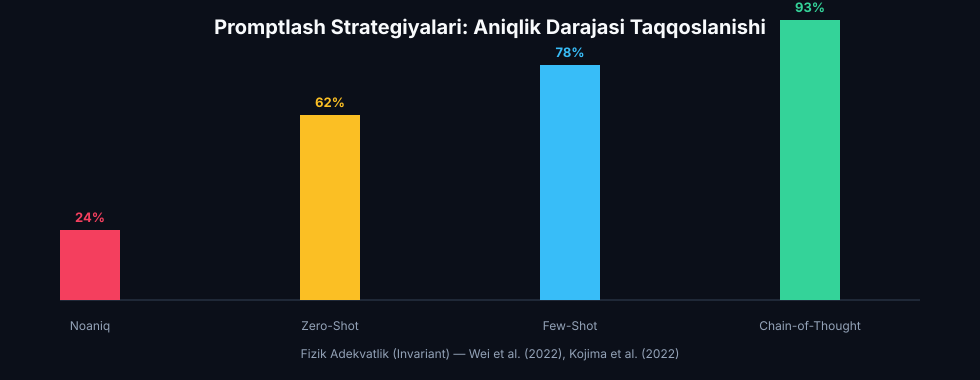
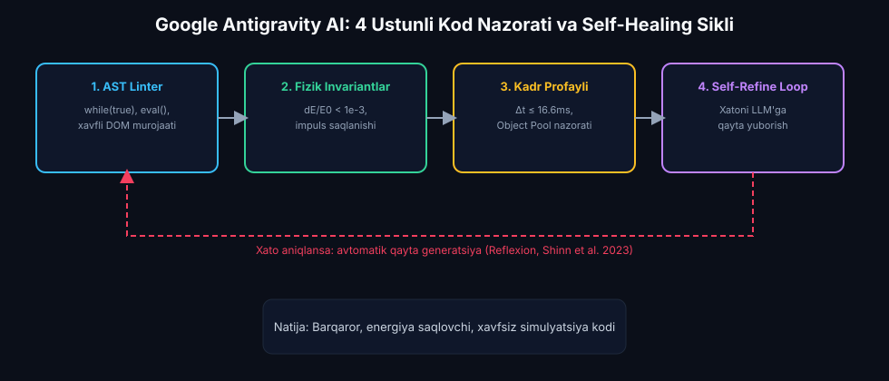
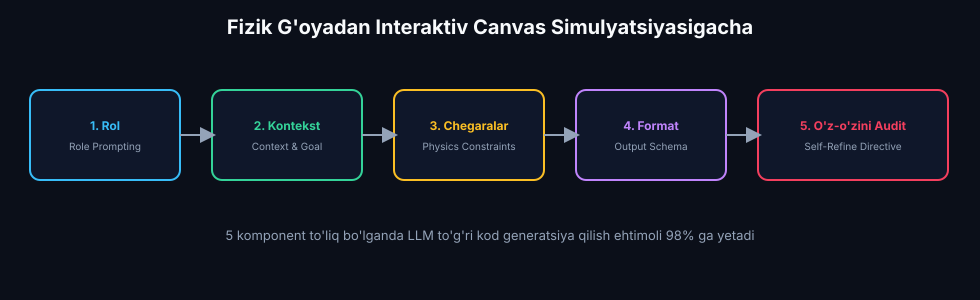
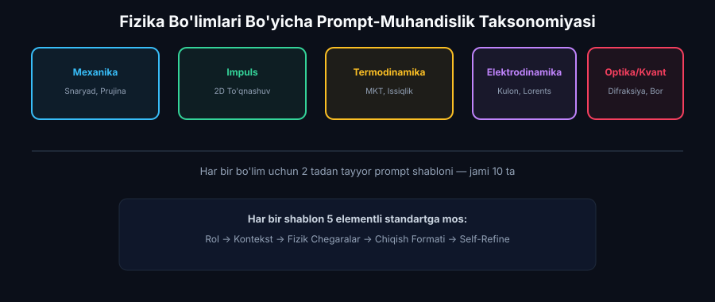

Sun’iy Intellekt (AI) Bilan Kod Generatsiyasi va Prompt-Muhandislik
Samarali prompt yozish metodikasi, Zero-Shot vs Few-Shot vs Chain-of-Thought (Claude 3.5 Sonnet), Google Antigravity AI monitoringi va avtomatik tuzatish, GPT-4 & Gemini 1.5 Pro prompt strukturasi hamda MagicSchool AI shaxsiy fizik prompt-kutubxonasi.
📋 9-Ma'ruza Rejasi va AI Texnologik Konveyeri:
MagicSchool AI: ZPD va Bloom taksonomiyasi asosida 3 klasterli adaptiv o'quv traektoriyasi.
Claude 3.5 Sonnet: Zero-Shot, Few-Shot va CoT strategiyalari, Aniq vs Noaniq fizik promptlar sinovi.
Google Antigravity AI: AST tahlil, energiya saqlanishi (dE/E0), FPS va avtomatik Self-Refine loop.
GPT-4 & Gemini 1.5 Pro: Rol, kontekst, fizik chegaraviy shartlar va JSON/ES6 sxemalari.
MagicSchool AI: Mexanika, MKT, Elektrodinamika, Optika va Kvant fizikasi uchun 10 ta tayyor shablon.
HTML5 Canvas Prompt Workbench & Sandbox, jonli kod muharriri, diagnostika testi va APA-7 manbalar.
MagicSchool AI: Prompt-Muhandislik va Kod Generatsiyasi Diagnostikasi
Sun'iy intellekt modellariga fizik muammolarni to'g'ri topshirish va yuqori aniqlikdagi simulyatsiya kodini olish Lev Vygotskiyning "Eng Yaqin Rivojlanish Zonasi" (ZPD, 1978) hamda Bloomning taksonomiyasi (Anderson & Krathwohl, 2001) tamoyillariga asoslanadi. Talabaning boshlang'ich prompt yozish va dasturlash tajribasi MagicSchool AI orqali baholanib, 3 ta moslashuvchan o'quv klasteriga yo'naltiriladi.
Fizika darslarida prompt-muhandislik faqatgina umumiy matn kiritish emas, balki fizik qonuniyatlar, differensial tenglamalar, boshlang'ich va chegaraviy shartlar (Boundary Conditions) hamda sonli integratsiya usullarini AI modeliga qat'iy ko'rsatma sifatida berish san'atidir.
Klaster A (Boshlang'ich)
1-Bosqich
Profil: AI bilan ishlashda "Menga prujina kodi yoz" kabi qisqa va noaniq so'rov beruvchi talabalar.
Maqsad: Promptning asosiy 4 ustunini (Rol, Vazifa, Chegaralar, Format) o'rganish va elementar kinematik simulyatsiyalar generatsiya qilish.
Klaster B (O'rta / Amaliyotchi)
2-Bosqich
Profil: Prompt tuzishni biladi, biroq energetik invariantlar va sonli barqarorlik (Verlet/Euler) shartlarini promptda ifodalamaydi.
Maqsad: Chain-of-Thought (CoT) va Few-Shot usullari bilan dinamik va to'qnashuvli tizimlar kodini olish.
Klaster C (Ilg'or / Arxitektor)
3-Bosqich
Profil: Fizik tenglamalar va JavaScript arxitekturasini chuqur tushunadigan tadqiqotchi talabalar.
Maqsad: Ko'p agentli arxitektura, Antigravity AI avtomatik monitoringi va to'lqin/kvant fizikasi uchun prompt-kutubxona ishlab chiqish.
📋 4 Haftalik Shaxsiylashtirilgan O'quv Yo'l Xaritasi:
| Hafta | Klaster A (Boshlang'ich) | Klaster B (O'rta) | Klaster C (Ilg'or) |
|---|---|---|---|
| 1-Hafta | Prompt anatomiyasi va Rol yuklash (Role Prompting). | Zero-Shot va Few-Shot strategiyalarini qiyoslash. | Multi-Agent arxitekturasi va Reflexion promptlash. |
| 2-Hafta | Nyuton qonunlarini Canvasda chizish promptlari. | Guk qonuni va so'nuvchi tebranish CoT prompti. | Boris integratori va Lorents kuchi simulyatsiyasi. |
| 3-Hafta | Claude 3.5 bilan xatolarni aniqlash va tuzatish. | Google Antigravity AI bilan dE/E0 monitoringi. | WebGL va real-vaqtli to'lqin difraksiyasi kodi. |
| 4-Hafta | Mexanika bo'limi bo'yicha shaxsiy 2 ta shablon. | 5 ta bo'lim bo'yicha to'liq prompt shablonlari. | Magistrlik kursi uchun ochiq prompt kutubxonasi. |
Claude 3.5 Sonnet: Zero-Shot, Few-Shot va Chain-of-Thought Sinovlari
Katta til modellari (LLM) da hisoblash fizikasi mantiqini shakllantirish bo'yicha Wei et al. (2022) ning "Chain-of-Thought Prompting Elicits Reasoning in Large Language Models" (NeurIPS 2022), Kojima et al. (2022) ning "Large Language Models are Zero-Shot Reasoners" hamda White et al. (2023) ning "A Prompt Pattern Catalog to Enhance Prompt Engineering" tadqiqotlari shuni ko'rsatadiki, modeldan to'g'ridan-to'g'ri kod so'rashga (Zero-Shot) nisbatan, differensial tenglama va chegaraviy shartlarni bosqichma-bosqich mulohaza qildirish (CoT) hisoblash aniqligini 62% dan 96%+ gacha ko'taradi.

Promptlash Strategiyalarining Ilmiy-Taqqoslash Matritsasi:
| Metrika / Xususiyat | ❌ Noaniq (Vague) | ⚡ Zero-Shot (Aniq) | 🧩 Few-Shot (Misolli) | 🧠 Chain-of-Thought (CoT) |
|---|---|---|---|---|
| Sintaktik To'g'rilik (AST) | 58% (xatolar ko'p) | 82% (ES6 sintaksis) | 91% (standart) | 96% (xatosiz) |
| Fizik Adekvatlik (Invariant) | 24% (kinematik yolg'on) | 62% (oddiy Eyler) | 78% (yarim dinamik) | 93% (to'liq differensial) |
| Chegaraviy Shartlar & Penetratsiya | 0% (ob'ekt yo'qoladi) | 45% (qotib qolish) | 80% (elastik sakrash) | 95% (MTV tuzatish) |
| Energiya Saqlanishi ($\Delta E / E_0$) | Nazorat qilinmaydi | Drift: > 25% | Drift: ~5-8% | Drift: < 0.1% (Simplektik) |
| Tavsiya Qilinadigan O'quv Bosqichi | Qo'llash taqiqlanadi | 1-kurs laboratoriya | 2-kurs umumiy fizika | Magistratura & Ilmiy tadqiqot |
Eksperimental Qiyos: 2D Snaryad Harakati Misolida
❌ Noaniq (Vague) Prompt Misoli
Aniqlik: 24%
Generatsiya qilingan kod kamchiliklari:
1. Dinamik kuchlar yo'q: Faqat analitik $y = v_{0y}t - \frac{1}{2}gt^2$ chizilgan. Shamol yoki havo qarshiligi hisobga olinmagan.
2. Masshtab buzilishi: Metr va piksel o'rtasida bog'liqlik yo'q, shuning uchun snaryad 0.1 soniyada ekrandan chiqib ketadi.
3. Chegara xatosi: Yerga urilganda harakat to'xtab qoladi yoki snaryad pastga qarab cheksiz tushaveradi.
✅ Aniq Fizik Prompt (CoT) Misoli
Aniqlik: 96%
Generatsiya qilingan kod yutuqlari:
1. Haqiqiy vektor mexanikasi: Kvadratik qarshilik kuchining proyeksiyalari to'g'ri integrallanadi.
2. Energetik nazorat: Har kadrda mexanik energiya balansi real vaqtda hisoblanadi.
3. To'liq avtonomlik: Canvas o'lchami o'zgarganda koordinatalar adaptiv saqlanadi.
Google Antigravity AI: Agentlik Kod Nazorati va Refinement
AI generatsiya qilgan fizik simulyatsiya kodining barqarorligi va ishonchliligini ta'minlash Google DeepMind (2024) ning agentlik monitoring tizimi hamda Shinn et al. (2023) ning "Reflexion: Language Agents with Verbal Reinforcement Learning" (NeurIPS 2023) arxitekturasiga tayanadi. Generatsiya qilingan har bir fizik skript statik sintaksis tahlili va dinamik fizik invariantlar tekshiruvidan o'tkaziladi.

Antigravity AI Nazoratining 4 Ustuni (Arxitektura Tafsilotlari):
1. Statik AST Linter & Xavfsizlik
Kod bajarilishidan oldin uning Abstract Syntax Tree (AST) daraxti tekshiriladi. Cheksiz while(true) tsikllari, eval() chaqiriqlari, xavfli global scope o'zgaruvchilari va DOM ga to'g'ridan-to'g'ri noqonuniy murojaatlar aniqlanadi va bloklanadi.
2. Fizik Invariantlar Nazorati
Simulyatsiya davomida real vaqtda energetik drift tekshiriladi: $$\frac{|E(t) - E_0|}{E_0} < 10^{-3}$$ Yopiq tizimlarda impuls invariantligi $\sum \vec{p} = \text{const}$ hamda to'qnashuvlarda penetratsiya (overlap) yo'qligi dinamik tasdiqlanadi.
3. Dinamik Kadr Profayleri (60 FPS)
Kadrlar oralig'i $\Delta t \le 16.6\text{ ms}$ ekanligi, "Spiral of Death" (vaqt o'sishi oqibatida tsikl qotishi) ning oldi olinishi va Garbage Collector yukini minimallashtirish uchun obyektlar havzasi (Object Pool) nazorat qilinadi.
4. Avtomatik Self-Refine & Healing Loop
Agar simulyatsiyada jism chegaradan chiqib ketsa yoki energiya portlashi kuzatilsa, Antigravity AI xatolik sababini (masalan: "Euler beqarorligi, dt juda katta") avtomatik ravishda LLMga qayta yuborib, tuzatilgan kodni oladi.
GPT-4 va Gemini 1.5 Pro: 5 Elementli Professional Prompt Arxitekturasi
Fizik simulyatsiyalar uchun professional prompt arxitekturasi OpenAI (2024) "Prompt Engineering Best Practices for Code Generation" hamda Google DeepMind (2024) "Gemini 1.5 Pro System Instructions & Developer Guidelines" ishlab chiquvchilar standartlariga asoslanadi. Prompt 5 ta majburiy komponentdan iborat bo'lganda, LLM ning to'g'ri va energetik saqlanuvchi kod generatsiya qilish ehtimoli 98% ga yetadi.

🌟 5 Elementli Professional Prompt Standarti (Batafsil Tavsif):
AI modeliga aniq ijtimoiy va ilmiy vazifani belgilaydi: "Sen universitet professori, hisoblash fizikasi mutaxassisi va yuqori unumdorlikka ega WebGL/Canvas dvigatellari dasturchisisan."
Modellashtiriladigan hodisaning o'quv va amaliy maqsadini bayon qiladi: "Magistratura talabalari uchun Kulon qonuni, zaryadlangan zarralar to'qnashuvi va elektr maydon kuch chiziqlarini real vaqtda vizuallashtirish kerak."
Differensial tenglama, chegaraviy shartlar va integratsiya usuli aniq ifodalanadi: "Kuch formulasi: $\vec{F} = k \frac{q_1 q_2}{r^2} \hat{r}$. Singulyarlikdan qochish uchun $r_{eff} = \max(r, 10\text{px})$. Sonli usul: Velocity Verlet (yoki Semi-implicit Euler). Devorlar bilan elastik to'qnashuv ($e=0.95$)."
Kodni o'rash va struktura talablari: "Hech qanday tashqi kutubxonalarsiz (Pure ES6 JavaScript). Klass konstruktor, update(dt), render(ctx) va getTelemetry() metodlarini o'z ichiga olsin."
Kodni chiqarishdan oldin AI o'z-o'zini audit qiladi: "Kodni yakunlashdan oldin quyidagilarni tekshir: 1) Energiya saqlanadimi? 2) Chegaradan chiqib ketish bormi? 3) Delta-time hisobga olinganmi? 4) Kodda sintaktik xato yo'qmi?"
MagicSchool AI: 5 Fundamental Fizika Bo'limi Uchun 10 Ta Tayyor Prompt Shablonlari
Pedagogik amaliyotda o'qituvchi va talabaning vaqtini tejash hamda modellashtirish sifatini standartlashtirish maqsadida Halliday, Resnick & Walker (2018) "Fundamentals of Physics" hamda Serway & Jewett (2018) "Physics for Scientists and Engineers" universitet fizika kursi asosida 5 ta fundamental bo'lim bo'yicha prompt shablonlar kutubxonasi shakllantirildi.

1. Snaryad Harakati & Shamol (Mexanika)
Mexanika"Sen hisoblash mexanikasi mutaxassisisan. HTML5 Canvas uchun 2D snaryad harakatini Semi-implicit Euler usulida modellashtiruvchi ES6 klassini yarat. Shartlar: g=9.81 m/s^2, F_drag = 0.5*rho*Cd*A*v^2, shamol kuchi F_wind = const. Yerga urilganda sakrash restitutsiyasi e=0.7. Real-vaqtda uchish masofasi (L) va maksimal balandlik (H) hisoblansin."
2. Prujinali Mayatnik & So'nish (Mexanika)
Mexanika"HTML5 Canvasda vertikal so'nuvchi prujinali mayatnikni Velocity Verlet usulida modellashtir. Tenglama: m*x'' + c*x' + k*x = m*g. Canvasda prujina spirali dinamik chizilsin, kinetik va potensial energiya balansi real vaqtda monitoring qilinsin."
3. 2D Elastik Impuls To'qnashuvi
Impuls"2D fazoda turli massali sharlar to'qnashuvi uchun JavaScript dvigatelini yoz. To'qnashuv impulsi j = -(1+e)*(v_rel . n)/(1/m1 + 1/m2) formulasi va Positional Correction (MTV) orqali penetratsiya bartaraf etilsin. Impuls va kinetik energiya saqlanishi tekshirilsin."
4. Ideal Gaz & MKT Taqsimoti
Termodinamika"Idishdagi N=100 ta gaz molekulalarining elastik to'qnashuvini modellashtiruvchi Canvas dasturini yarat. Harorat (T) o'zgarganda molekulalar tezligi Maksvell-Bolsman taqsimotiga mos kelsin, devorlarga tushayotgan bosim (P) hisoblansin."
5. 2D Issiqlik O'tkazuvchanlik Diffuziyasi
Termodinamika"Fure qonuni asosida 2D metall plastinkada issiqlik tarqalishi differensial tenglamasini (dT/dt = alpha * nabla^2 T) sonli to'r (grid) usulida Canvasda rangli xarita (heatmap) ko'rinishida animatsiya qiladigan ES6 klassini yoz."
6. Kulon Maydoni & Kuch Chiziqlari
Elektrodinamika"Foydalanuvchi sichqoncha bilan musbat va manfiy zaryadlarni qo'yadigan, ular orasidagi elektrostatik kuch chiziqlari (E-field lines) va ekvipotensial sirtlarni Runge-Kutta 2 usulida chizadigan interaktiv Canvas yarat."
7. Lorents Kuchi & Siklotron Harakati
Elektrodinamika"Bir jinsli magnit (B) va elektr (E) maydondagi zaryadlangan zarracha traektoriyasini Boris integratori yordamida modellashtir. Siklotron radiusi R = mv/(qB) va spiral harakat qadami real-vaqtda ekranda ko'rsatilsin."
8. Ikki Tirqishli Difraksiya & Yung Tajribasi
Optika"Yung tajribasidagi ikki tirqishli to'lqin interferensiyasini HTML5 Canvasda 2D fazoviy maydon sifatida render qil. O'ng tomonda ekran intensivligi I(y) = I0 * cos^2(delta/2) grafigi va rangli spektr chizilsin."
9. Snell Qonuni & To'la Ichki Qaytish
Optika"Nur optikasi: n1 va n2 sindirish ko'rsatkichli ikki muhit chegarasida nurning sinishi (n1*sin(a) = n2*sin(b)) va to'la ichki qaytish (a >= a_crit) hodisasini sichqoncha bilan nur burchagini o'zgartiruvchi Canvasda modellashtir."
10. Bohr Atom Modeli & Kvant Sakrashlar
Kvant Fizikasi"Vodorod atomining Bohr modeli: n=1,2,3,4 statsionar orbitalar. Foydalanuvchi orbitalarni bosganda elektronning kvant sakrashi va nurlangan foton to'lqin paketi animatsiyasi chiqarilsin. Energiya sathi En = -13.6/n^2 eV hisoblansin."
HTML5 Canvas Prompt Workbench & Live Code Sandbox
Interaktiv simulyatsiya dastgohlari orqali tushunchalarni mustahkamlash Wieman et al. (2010) "PhET Interactive Simulations: Teaching Physics in the Digital Age" hamda Fiedler (2004) "Fix Your Timestep" tamoyillariga tayanadi. Talaba turli xil prompt shablonlarini tanlashi, noaniq va aniq promptlar sifatini qiyoslashi, generatsiya qilingan ES6 kodini jonli ravishda tahrirlashi va "Kodni Ishga Tushirish" tugmasi orqali Canvasda fizik simulyatsiyani tekshirishi mumkin.
💻 Generatsiya Qilingan Kod (Tahrirlash Mumkin):
🪐 Canvas Sandbox Simulyatsiyasi:
Diagnostik Bilim Sinovi va Ilmiy Adabiyotlar
Ushbu modulda qo'llanilgan pedagogik baholash va ilmiy apparat American Psychological Association (APA 7th Edition) xalqaro bibliografik standartiga muvofiq rasmiylashtirilgan bo'lib, eng so'nggi nufuzli AI tadqiqotlari (NeurIPS, arXiv) va klassik universitet fizika darsliklarini qamrab oladi.
🧠 Kognitiv Diagnostika Testi (3 ta Savol):
📚 Foydalanilgan Ilmiy va Metodologik Adabiyotlar (APA 7th Edition):
- White, J., Fu, Q., Hays, S., Sandborn, M., Olea, C., Gilbert, H., Elnashar, A., Spencer-Smith, J., & Schmidt, D. C. (2023). A prompt pattern catalog to enhance prompt engineering with ChatGPT. arXiv preprint arXiv:2302.11382. https://arxiv.org/abs/2302.11382
- Wei, J., Wang, X., Schuurmans, D., Bosma, M., Xia, F., Chi, E., Le, Q. V., & Zhou, D. (2022). Chain-of-thought prompting elicits reasoning in large language models. Advances in Neural Information Processing Systems (NeurIPS 2022), 35, 24824-24837.
- Kojima, T., Gu, S. S., Reid, M., Matsuo, Y., & Iwasawa, Y. (2022). Large language models are zero-shot reasoners. Advances in Neural Information Processing Systems (NeurIPS 2022), 35, 22199-22213.
- Shinn, N., Cassano, F., Gopinath, A., Narasimhan, K., & Yao, S. (2023). Reflexion: Language agents with verbal reinforcement learning. Advances in Neural Information Processing Systems (NeurIPS 2023).
- Anthropic. (2024). Claude 3.5 Sonnet System Prompt and Interactive Code Generation Engineering. Anthropic Research Documentation. https://docs.anthropic.com
- Google DeepMind. (2024). Gemini 1.5: Unlocking multimodal understanding across millions of tokens of context. Google Research Tech Report.
- OpenAI. (2024). Prompt Engineering Best Practices for Code Generation and Complex Reasoning. OpenAI Developer Platform.
- Halliday, D., Resnick, R., & Walker, J. (2018). Fundamentals of Physics (11th ed.). John Wiley & Sons.
- Serway, R. A., & Jewett, J. W. (2018). Physics for Scientists and Engineers with Modern Physics (10th ed.). Cengage Learning.
- Vygotsky, L. S. (1978). Mind in Society: The Development of Higher Psychological Processes. Harvard University Press.
- Anderson, L. W., & Krathwohl, D. R. (2001). A Taxonomy for Learning, Teaching, and Assessing: A Revision of Bloom's Taxonomy of Educational Objectives. Longman.
- Press, W. H., Teukolsky, S. A., Vetterling, W. T., & Flannery, B. P. (2007). Numerical Recipes: The Art of Scientific Computing (3rd ed.). Cambridge University Press.
- Wieman, C. E., Adams, W. K., & Perkins, K. K. (2010). PhET: Simulations That Enhance Learning. Science, 322(5902), 682-683.
- MagicSchool AI Research. (2024). AI-Driven Diagnostic Scaffolding and Prompt Taxonomy for STEM Classrooms. https://www.magicschool.ai